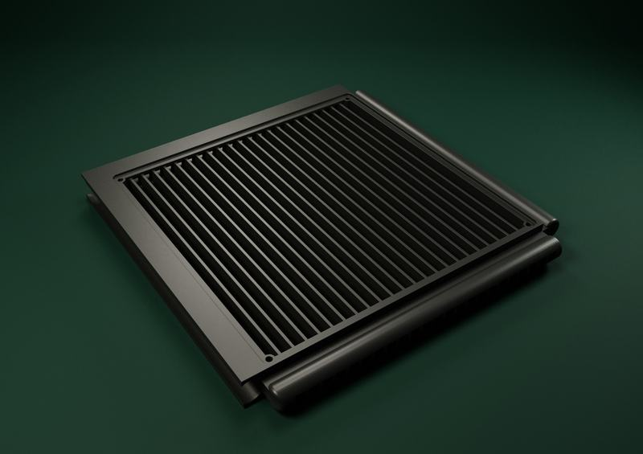
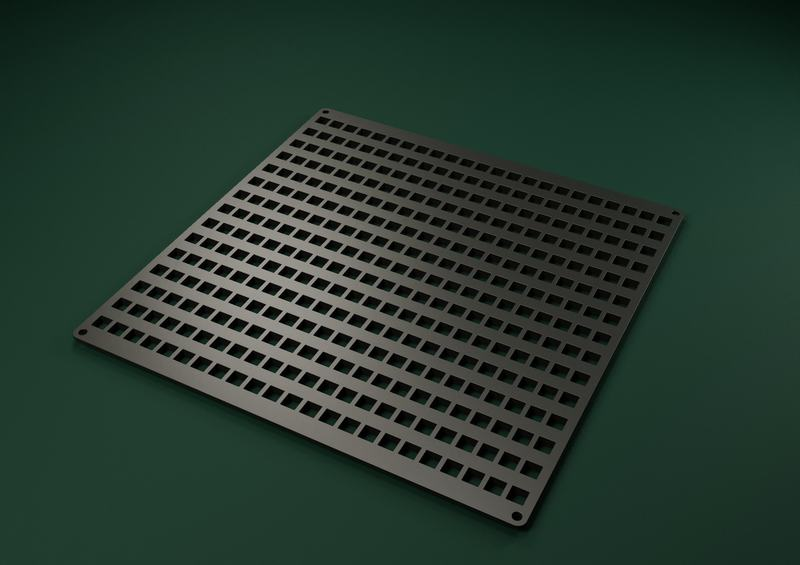
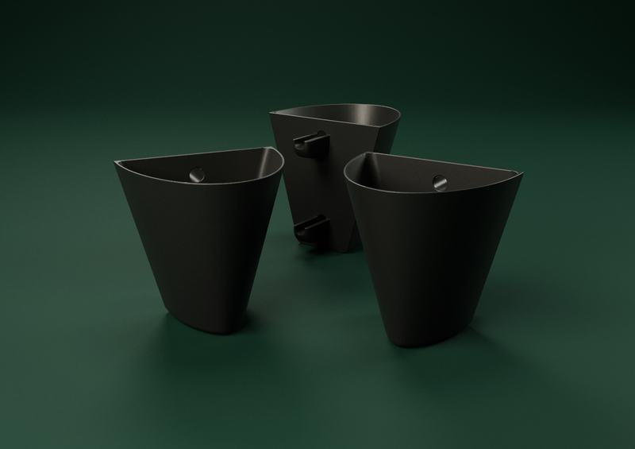

The panel
Locks to its neighbours and carries the water.

A South African patent since 2016. One panel, one grid, one vessel, and water that looks after itself.
500 × 500 mm, lined with vertical water channels. The tube along its foot feeds the panel below, and its edges slide together, male into female.
Fixed at four corners over the channels. Its slots set twenty vessels in four rows of five.
One for each plant. Two hooks pass through the grid by hand, and the upper one carries water in. It lifts out the same way.
A digital timer starts the pump. Water climbs the ring main, enters along the top edge, falls from panel to panel and returns to the reservoir.
Four panels make a square metre and carry eighty plants. Panels extend in any direction, flat, curved or slanted.
Where one panel meets the next, seen from the side.
Each was drawn to work only with the others.

Locks to its neighbours and carries the water.

Holds every vessel exactly where it was placed.

One for each plant. Its hooks hold it and let it drink.
Drawings and data are available to architects on request.
500 × 500 mm panel. Four panels to the square metre, extended in any direction.
20 clip-in pots per panel, about 80 plants per square metre.
Recycled polypropylene, injection moulded in Cape Town.
A submersible pump in the reservoir feeds the ring main. A digital timer runs it, set to the second on any day of the week, and a battery keeps its programme. Engineered with the wall and guaranteed with it. Panels feed one another from the top.
Flat, curved and slanted walls, indoors and outdoors. Parts swivel, so panels follow a curve.
Complete, by our team. The system is not sold in parts.


We will tell you what could live on it.